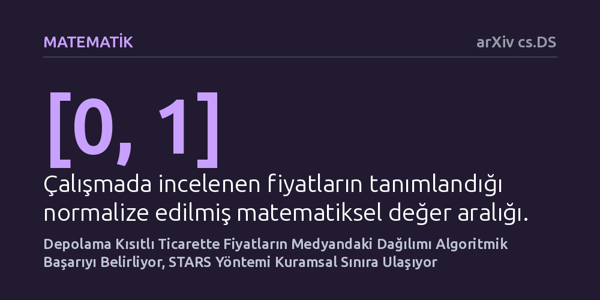

MATEMATIK · arXiv cs.DS · 2026-10-08
Araştırmacılar, sınırlı depolama kapasitesiyle fiyat belirsizliği altında yapılan ticarette en düşük kâr kaybına ulaşmanın kuramsal sınırlarını ve bunu sağlayacak algoritmayı araştırdı. Fiyatların medyan etrafındaki yığılmasının algoritmik başarıyı kısıtladığını gösteren çalışma, gelecek senaryolarını simüle eden STARS algoritmasının bu kuramsal sınırlara neredeyse tamamen ulaştığını kanıtladı.
Sınırlı depo kapasitesiyle belirsiz piyasalarda alım satım yaparken kayıpları asgariye indirmenin aşılmaz bir matematiksel sınırı olduğunu ve geleceğe dönük senaryo simülasyonlarıyla bu en iyi sınıra pratikte ulaşılabileceğini gösteriyor.

Ticarette en temel kural ucuza alıp pahalıya satmaktır; ancak elinizde sonsuz bir depo yoksa ve gelecekte fiyatların nasıl değişeceğini tam olarak bilmiyorsanız işler hızla karmaşıklaşır. Deposu sınırlı bir tüccar, gördüğü her ucuz fiyattan mal alamaz; çünkü deposunu hemen doldurursa daha sonra gelebilecek çok daha cazip bir alım fırsatını kaçırabilir. Aynı şekilde, elindeki malı ilk yüksek fiyatta satarsa ileride ortaya çıkabilecek rekor bir fiyat artışından mahrum kalır. Üstelik bu kararlar geri alınamaz niteliktedir.
Araştırmacıların peşine düştüğü temel soru tam olarak bu noktada ortaya çıkıyor: Gelecekteki fiyat akışını önceden bilmeyen bir çevrim içi karar verici, gelecekteki tüm fiyatları baştan bilen kusursuz bir kâhine kıyasla kâr kaybını (algoritmik dilde 'pişmanlığı') ne kadar azaltabilir? Dahası, hiçbir algoritmanın aşamayacağı temel bir matematiksel başarım sınırı var mıdır? Bu soru, yalnızca klasik emtia ticareti için değil, elektrik şebekelerine bağlı batarya depolama sistemlerinden bulut bilişim kaynaklarının alım satımına kadar pek çok modern alan için hayati önem taşır.
Yazarlar bu problemi çözmek için fiyatların bilinen sabit bir olasılık dağılımından bağımsız ve özdeş biçimde çekildiği kuramsal bir ortam kurguladı. Fiyatlar sıfır ile bir arasında normalize edilmiş bir aralıkta gerçekleşiyor. Araştırmacılar, genel geçer varsayımlar yerine, fiyatların ortanca değer (medyan) etrafında nasıl kümelendiğini mercek altına aldı. Fiyat kütlesinin medyan çevresinde ne kadar yoğunlaştığını ölçmek için beta adını verdikleri özel bir parametre tanımladılar.
Araştırma yöntemi deney veya gözlem yerine sıkı matematiksel ispatlara ve asimptotik pişmanlık analizine dayanıyor. Yazarlar, hem ayrık fiyat adımlarını hem de sürekli dağılımları inceleyerek farklı piyasa yapılarının algoritmik zorluğunu ayrıştırdı. Özellikle medyan etrafında bir boşluk bulunması, yani medyan değerinin hemen yakınında fiyat oluşmaması durumunun, tüccarın karar mekanizmasını nasıl kilitlediğini kuramsal olarak kanıtladılar.
Çalışmanın ilk büyük bulgusu, algoritmik başarımın önündeki aşılmaz matematiksel alt sınırların ortaya konması oldu. Araştırmacılar, fiyat dağılımında bir medyan boşluğu olduğunda ve tüccar işe boş bir depoyla (sıfır stokla) başladığında, pişmanlığın zamanla kaçınılmaz olarak belirli bir hızda büyüyeceğini matematiksel olarak ispatladı. Bu durum, piyasa koşulları ne olursa olsun hiçbir çevrim içi algoritmanın belirli bir hata sınırının altına inemeyeceğini, yani algoritmik başarımda evrensel bir sınır tayfı bulunduğunu gösteriyor.
İkinci ve en yapıcı bulgu ise yazarların geliştirdiği STARS (Senaryo Ortalaması Alarak Depolu Ticaret) algoritmasının bu sınırlara meydan okumasıdır. STARS, karar anında gelecekte ortaya çıkabilecek olası fiyat patikalarını simüle ediyor ve bu senaryoların ortalamasını alarak eldeki her ek stok biriminin gelecekteki değerini yaklaşık olarak hesaplıyor. Yazarlar, STARS'ın ayrık fiyatlarda logaritmik düzeyde, sürekli dağılımlarda ise ispatlanan kuramsal alt sınırlara neredeyse birebir denk başarım sergilediğini kanıtladı.
Bu sonuçlar, belirsizlik altında depolama yönetimi yapan sistemler için son derece somut bir ders sunuyor: Geleceği bilmek imkânsız olsa bile, geleceğe dair çok sayıda olası senaryonun ortalamasını alarak karar vermek, teorik olarak ulaşılabilecek en iyi performansı yakalamak için yeterlidir. Değer fonksiyonunu simülasyonla yaklaşık hesaplayan bu yaklaşım, karmaşık dinamik programlama hesaplamalarına girmeden neredeyse kusursuz kararlar almayı mümkün kılıyor.
Ancak bu çalışmanın bir önbaskı olduğu ve henüz hakem süzgecinden geçmediği unutulmamalıdır. Ayrıca model, fiyatların zaman içinde birbirinden bağımsız geldiğini ve dağılımın önceden bilindiğini varsaymaktadır; oysa gerçek piyasalarda fiyat şokları, mevsimsellik ve otokorelasyon gibi karmaşık etkenler bulunur. Yine de kurulan kuramsal çatı, depolamalı ticaret sistemlerinin temel sınırlarını ve bu sınırlara nasıl ulaşılabileceğini gösteren sağlam bir referans noktası sunmaktadır.